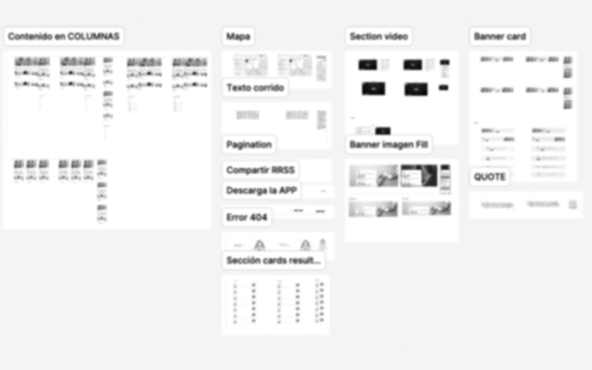

Insurance · AEM migration
Description
Migration of three corporate websites to Adobe Experience Manager and their unification into a single site for an insurance company.

Confidential clientWhat it involved
- Information architecture: the as-is structure of the three websites and the to-be structure of the unified site.
- Redesign of components and experience according to information needs.
- Design of components suited to their later configuration in Adobe Experience Manager.
- Alignment with the client on design, requirements and proposals: relocation of cross-cutting information, colors and layout.
- Documentation of the design system, color tokens and typography.
- Functional prototype for a client demo and later adjustments.
- Documentation of component behavior for development and accessibility clarifications.
Tools
 Figma
Figma- Figma Make
Project protected by a confidentiality agreement
Get in touch if you would like to know more about it.